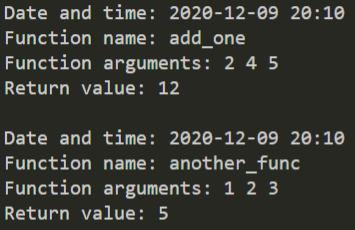

1
Декоратор-логгер
среднеавтопроверка
Напиши декоратор logger. Он выводит в 📃 консоль дату и время вызова функции, имя функции, аргументы, с которыми её вызвали, и возвращаемое значение.

Показать ответ (сначала попробуй сам!)
def logger(func):
from datetime import datetime
def wrapper(*args, **kwargs):
call_date = datetime.now()
result = func(*args, **kwargs)
print('Date and time: {:%Y-%m-%d %H:%M}'.format(call_date))
print(f'Function name: {func.__name__}')
print('Function arguments: ' + ' '.join(map(lambda x: str(x), args)))
print(f'Return value: {result}\n')
return result
return wrapper
@logger
def add_one(*num):
return sum(num) + 1
@logger
def another_func(x, y, z):
return x * y + z
add_one(2, 4, 5)
another_func(1, 2, 3)